Qui nous sommesWho we are
Pionniers de l'IA d'intérêt général, depuis 2014.Pioneers of public-interest AI, since 2014.
Organisation à but non lucratif née dans la Silicon Valley. La Bayes Platform gère tout le cycle de vie des agents IA du service public, de l'expérimentation à la production à grande échelle.A Silicon Valley-born nonprofit. The Bayes Platform handles the entire lifecycle of public-service AI agents, from experimentation to production at scale.
Autant d'institutions où la Bayes Platform se déploie : cumulés, des millions de bénéficiaires.As many institutions where the Bayes Platform deploys: together, millions of beneficiaries.
L'équipeThe team
Une équipe du service public et de la tech.A team from public service and tech.
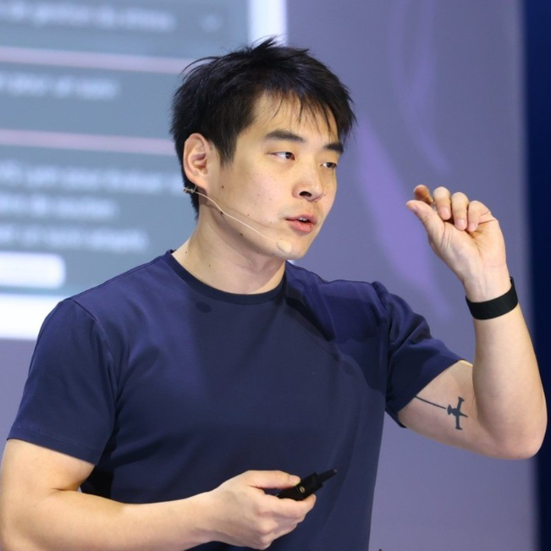
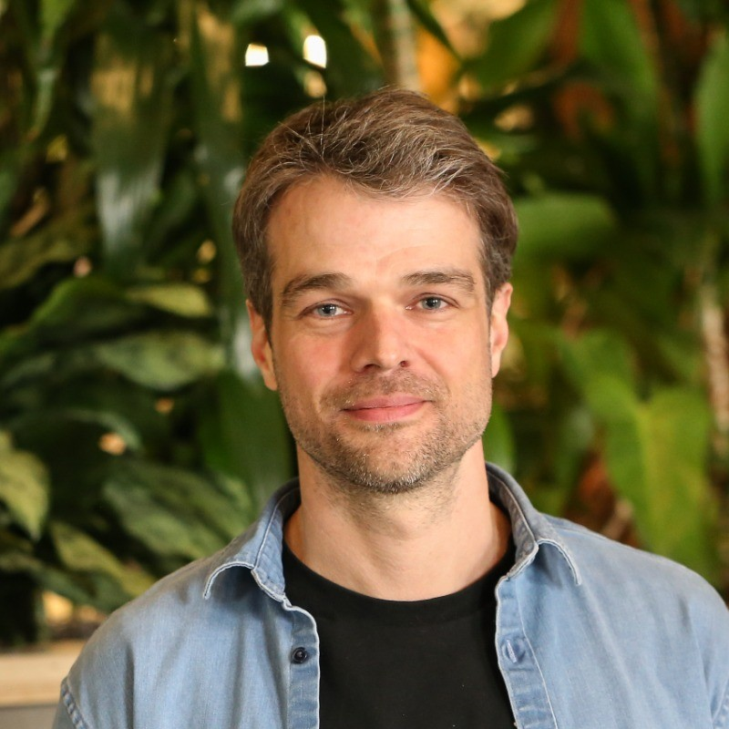
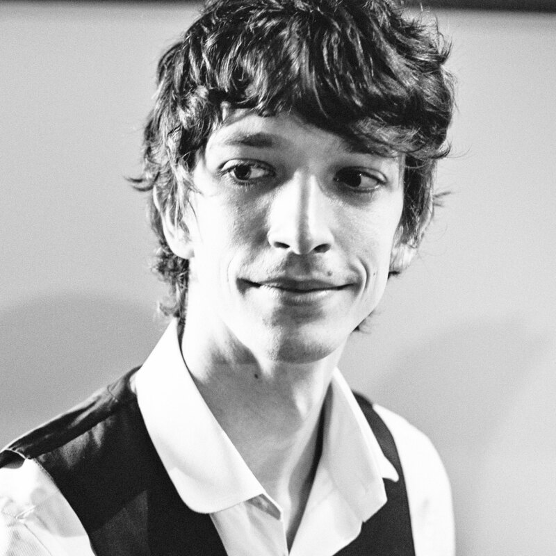
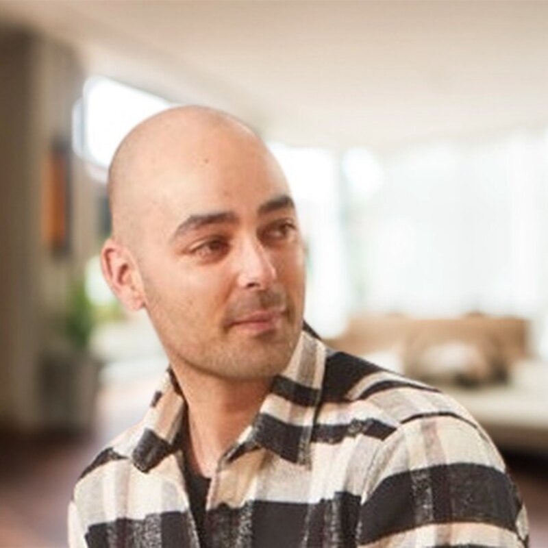
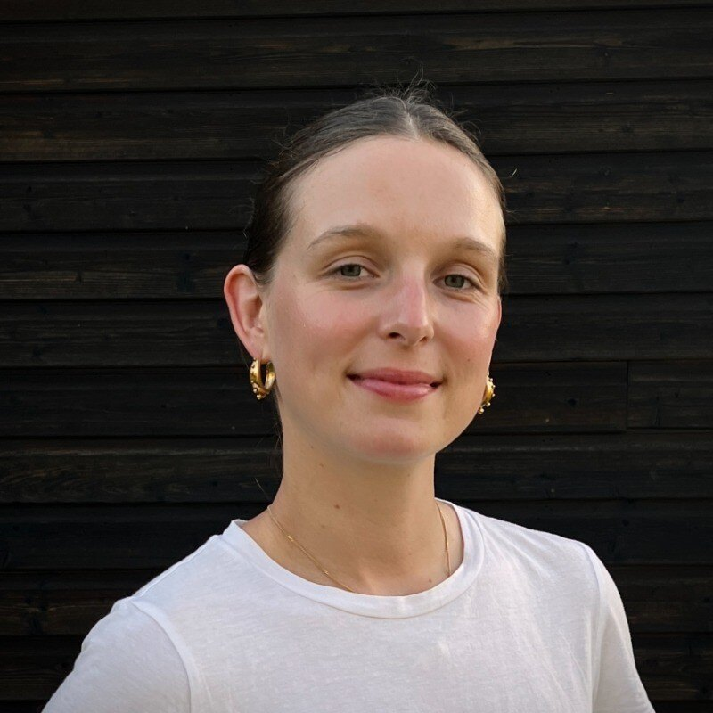
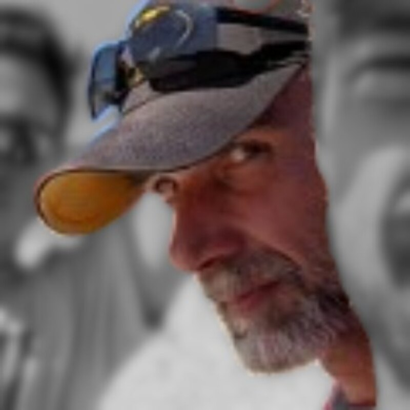
RéférencesReferences
Ils nous font confiance.They trust us.

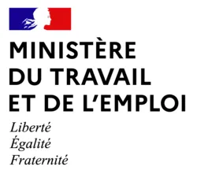
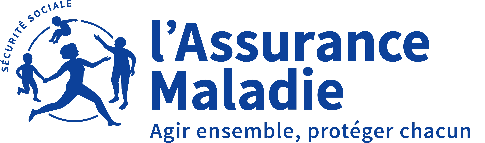
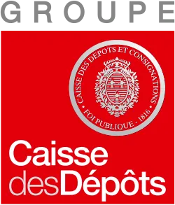
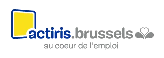


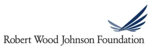
Notre produitOur product
Voici la Bayes Platform.Introducing the Bayes Platform.
La plateforme open-source d'agents IA qui transforme ces cas d'usage en services en production, sur l'infrastructure des organisations qui les déploient.The open-source AI agent platform that turns these use cases into production services, on the infrastructure of the organizations that run them.
Ce qui nous distingueWhat sets us apart
Pas un générateur d'agents générique.Not a generic agent builder.
Un cas d'usage de service public a des exigences qu'un assistant générique ignore. La Bayes Platform les traite par défaut, prête à l'emploi.A public-service use case has requirements a generic assistant ignores. The Bayes Platform handles them by default, out of the box.
Pas un RAG génériqueNot a dumb generic RAG
L'agent suit vos protocoles officiels, sources citées, sans dériver vers le web ouvert. Démo MCP santé à suivre.The agent follows your official protocols, sources cited, never drifting to the open web. MCP health demo next.
Métriques prêtes à l'emploiMetrics out of the box
Volume, sujets, et surtout les angles morts documentaires : de quoi piloter la qualité du contenu d'accompagnement.Volume, topics, and crucially the documentation blind spots: everything to steer the quality of the guidance.
Campagnes d'expérimentationExperimentation campaigns
Testez et faites valider les réponses par des experts, à l'aveugle, avant tout lancement en production.Test and have experts validate answers, blind, before any production launch.
Éviter le faux pas publicAvoid the public misstep
Le chatbot emploi autrichien (AMS) a reproduit des biais de genre, en plein débat public. L'atténuation des biais est intégrée d'origine, pas une option.Austria's AMS employment chatbot reproduced gender bias, amid public outcry. Bias mitigation is built in from day one, not an afterthought.
Cas d'usage · EmploiUse case · Employment
Un coach IA, dans l'outil métier de France Travail.An AI coach, inside the France Travail workspace.
Un copilote ancré dans vos systèmesA copilot grounded in your systems
Via MCP, l'agent interroge vos back-offices en bac à sable et répond en langage clair, sources à l'appui.Through MCP, the agent queries your back-offices in a sandbox and answers in plain language, with sources.| Réf. | Type | AnnéeYear |
|---|---|---|
| 142 | ArrêtRuling | 2021 |
| 087 | JugtJudgt | 2019 |
Cas d'usage · SantéUse case · Healthcare
Des dizaines de cas d'usage, au service des soignants et des patients.Dozens of use cases, serving caregivers and patients.
Dans les hôpitaux publics, les besoins remontent du terrain. Notre programme d'accompagnement Impulse les transforme en agents, déployés sur la Bayes Platform.In public hospitals, needs come from the ground up. Our Impulse program turns them into agents, deployed on the Bayes Platform.
Cas d'usage · AnalytiqueUse case · Analytics
Un autre type d'agent : vos données en insights, à la volée.A different kind of agent: your data into insights, on the fly.
Posez la question en langage clair. L'agent structure la donnée, écrit la requête, et génère le bon graphique automatiquement.Ask in plain language. The agent structures the data, writes the query, and generates the right chart automatically.Cas d'usage · TogoUse case · Togo
Au Togo, le service public tient dans une conversation.In Togo, a public service fits in a conversation.
9 millions de citoyens · avec l'Agence Togo Digital, hébergé à terme à Lomé.9 million citizens · with Agence Togo Digital, hosted in time in Lomé.
Demande de diplôme ou d'attestationDiploma or certificate request
Langues locales et messages vocaux : l'inclusion des ~40% d'adultes qui ne lisent ni n'écrivent (CIA World Factbook, 2015).Local languages and voice notes: including the ~40% of adults who cannot read or write (CIA World Factbook, 2015).
Notre modèleOur model
Une philosophie ouvertariste.An open-first philosophy.
Open-source, à but non lucratifOpen-source, nonprofit
Au standard du secteurTo sector standards
Là où vous en avez besoinWherever you need it
Comment nous travaillonsHow we work
Un partenaire, pas un prestataire.A partner, not a contractor.
Un prestataire gagne à vous rendre dépendant. À but non lucratif, nous gagnons quand l'impact se diffuse. D'où des incitations inversées.A contractor profits from keeping you dependent. As a nonprofit, we win when impact spreads. Hence the opposite incentives.
Le code est à vousThe code is yours
Open-source sous licence MIT. Déployez, modifiez, reprenez la main quand vous voulez.Open-source under the MIT license. Deploy, modify, take over whenever you want.
Nos intérêts sont les vôtresOur interests are yours
Nous optimisons la portée et les résultats, jamais votre dépendance ni des heures facturées.We optimize for reach and outcomes, never your dependency or billable hours.
Chaque cas d'usage profite au suivantEvery use case helps the next
Nous répliquons chaque cas d'usage dans une bibliothèque ouverte, partagée avec des organisations similaires partout dans le monde. Démocratiser l'IA de pointe, pour l'intérêt général.We replicate every use case into an open library, shared with similar organizations worldwide. Democratizing state-of-the-art AI, for the public good.
Comment démarrerHow to start
Deux façons de travailler ensemble.Two ways to work together.
Selon votre maturité, deux portes d'entrée. Les deux mènent à la production, sur une plateforme que vous possédez.Two entry points, depending on your maturity. Both lead to production, on a platform you own.
Vous avez des cas d'usage en têteYou have use cases in mind
Nous les industrialisons ensemble, de l'idée à la production. Ou nous répliquons depuis notre bibliothèque des cas déjà éprouvés chez des partenaires similaires.We productionize them together, from idea to production. Or we replicate from our library cases already proven with similar partners.
Mobiliser l'intelligence collective du terrainMobilize the field's collective intelligence
Vos experts métier, formés et accompagnés, créent leurs propres cas d'usage sur la plateforme. La conduite du changement est facilitée ; et comme tout est bâti sur une base pré-validée avec l'institution, le chemin vers la production avec la DSI est balisé.Your domain experts, trained and supported, build their own use cases on the platform. Change management gets easier; and because everything sits on a base pre-validated with the institution, the path to production with IT is paved.